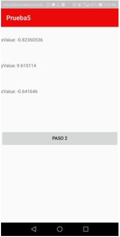
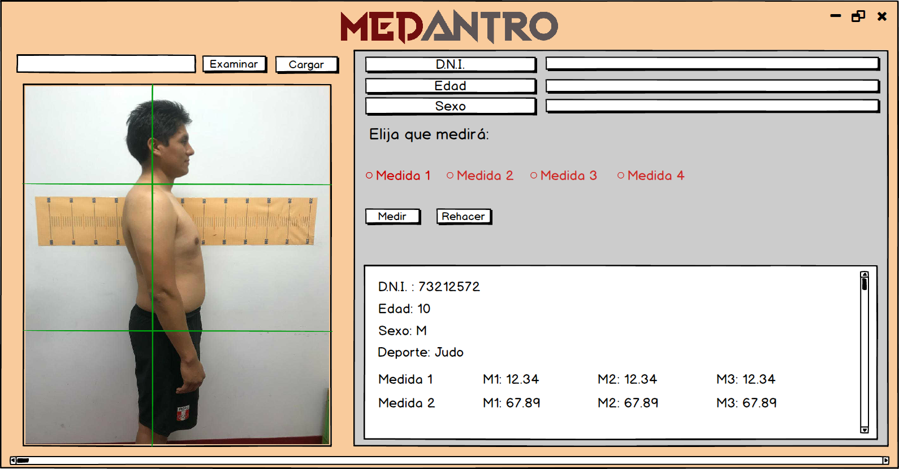
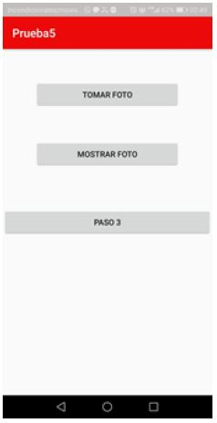
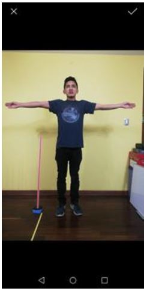
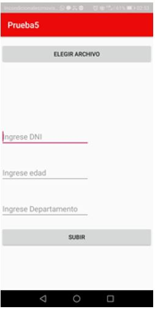
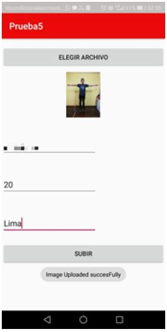
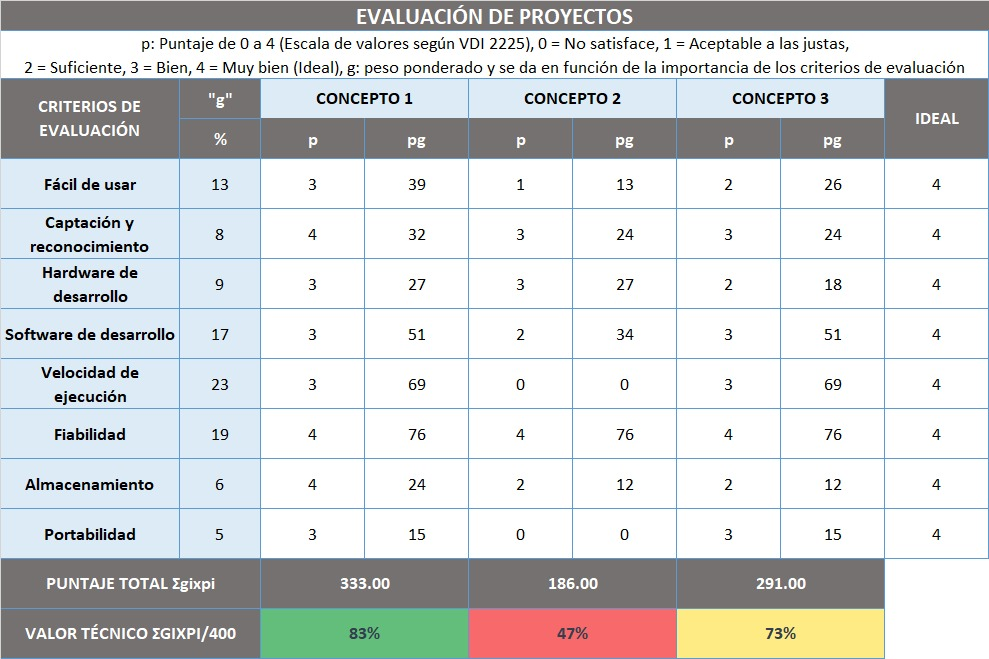

PRESENTACIÓN DE LA SOLUCIÓN
Basándonos en las soluciones observadas en el estado del arte, se decidió que la solución tendría dos partes, lo cual se explicara en los siguientes párrafos.
Primero, la elaboración de una aplicación para dispositivos móviles, el cual podrá ser descargada en cualquier lugar del país para conseguir una adecuada captación de talento. Ésta tendrá como principal función obtener imágenes específicas de los deportistas (a través de la cámara del dispositivo) y datos de ellos, tales como: DNI, edad y departamento. Posteriormente, esta información será enviada a una base de datos creada para el IPD.
Segundo, la elaboración de un programa basado en medición de imágenes; el cual descargan las imágenes de la base de datos, para luego, calcular las medidas necesarias para la determinación de cuál deporte el joven es propenso a destacar. Además, en el programa también se introducirá la información que fue enviada (DNI, Edad y Departamento) por medio de la aplicación. Finalmente, una vez estas medidas son tomadas, se podrá hacer la comparación con estándares para la determinación del deporte propenso a destacar.
La unión de estas partes conforma nuestra solución llamada “Medantro”.
MATERIALES
1) Tablet o celular
2) Trípode (opcional)
3) Computadora
4) Lenguaje de programación Python
5) Base de datos Fire Base
PRESENTACIÓN DEL APLICATIVO
La aplicación contará con 5 “activities” para poder recolectar los datos correctamente.
La foto debe ser tomada correctamente para que el registro de medidas en el programa sea exitoso, por ende, la primera activity mostrará un acelerómetro.
Con este se podrá saber con seguridad que el dispositivo está colocado en posición totalmente vertical. Para esto, los valores de xValue y zValue deben ser menores a 1, mientras que el yValue debe ser mayor a 9.5.


Luego de esto, se presiona en “Paso 2”, este nos llevará a la segunda activity en donde aparecerán 3 botones: “Tomar foto”, “Mostrar foto” y “Paso 3”.
Al presionar “Tomar foto” se abrirá la cámara del celular que servirá para la toma de la foto y guardarla. Para visualizarla sin necesidad de salir de la aplicación, se podrá presionar “Mostrar foto”.
 Finalmente, presionamos “Paso 3” que nos llevará a la última activity.
Es en esta en donde se introducirán los datos del niño: DNI, Edad, Departamento e incluir la fotografía con el botón “Elegir archivo”. Una vez los datos sean introducidos, con el botón “Subir” estos serán enviados a la base de datos.
 BASE DE DATOS

Figura 4. Ranking de paises latinoamericanos con más inversión en deporte.
Figura 4. Ranking de paises latinoamericanos con más inversión en deporte.
PRESENTACIÓN DEL SOFTWARE
Las imágenes serán descargadas y se abrirán en el programa para poder desarrollar las mediciones respectivas (Talla, Talla sentado, Envergadura) que se obtendrán gracias al uso del objeto de referencia ya mencionado.
Primero, se medirá el objeto de referencia y posteriormente se realizarán las mediciones requeridas.
En el programa, los primeros botones mostrados son: “Medición”, “Borrar” y “Subir imagen”. Estos sirven para tomar las mediciones, borrar las últimas mediciones tomadas y mostrar la imagen descargada en el programa respectivamente. Para esta última, antes se debe escribir el nombre de la imagen en el cuadro de texto encima del mismo botón.
A la derecha de los botones se encuentran cuadros de texto donde se ingresan los datos del niño según se indica a la izquierda de estos.
Finalmente, para obtener la comparación con estándares (Y obtener el deporte predispuesto a destacar del niño) se debe introducir el DNI de este y luego dar en el botón comparar, en el cual se obtendrá en porcentaje la predisposición por deporte.
Figura 4. Ranking de paises latinoamericanos con más inversión en deporte.
Las imágenes serán descargadas y se abrirán en el programa para poder desarrollar las mediciones respectivas (Talla, Talla sentado, Envergadura) que se obtendrán gracias al uso del objeto de referencia ya mencionado.
Tabla 3. Valoración de conceptos.
MATERIALES
- Una celular.
- Una vara (sistema de referencia ).
- Un trípode.
- Una computadora.
- Un asistente informático
PRESENTACIÓN DE LA SOLUCIÓN
Basándonos en las soluciones observadas en el estado del arte, se decidió que la solución tendría dos partes, lo cual se explicara en los siguientes párrafos. Primero, la elaboración de una aplicación para dispositivos móviles, el cual podrá ser descargada en cualquier lugar del país para conseguir una adecuada captación de talento. Ésta tendrá como principal función obtener imágenes específicas de los deportistas (a través de la cámara del dispositivo) y datos de ellos, tales como: DNI, edad y departamento. Posteriormente, esta información será enviada a una base de datos creada para el IPD. Segundo, la elaboración de un programa basado en medición de imágenes; el cual descargan las imágenes de la base de datos, para luego, calcular las medidas necesarias para la determinación de cuál deporte el joven es propenso a destacar. Además, en el programa también se introducirá la información que fue enviada (DNI, Edad y Departamento) por medio de la aplicación. Finalmente, una vez estas medidas son tomadas, se podrá hacer la comparación con estándares para la determinación del deporte propenso a destacar. La unión de estas partes conforma nuestra solución llamada “Medantro”.
PRESENTACIÓN DEL APLICATIVO
La aplicación contará con 5 “activities” para poder recolectar los datos correctamente. La foto debe ser tomada correctamente para que el registro de medidas en el programa sea exitoso, por ende, la primera activity mostrará un acelerómetro. Con este se podrá saber con seguridad que el dispositivo está colocado en posición totalmente vertical. Para esto, los valores de xValue y zValue deben ser menores a 1, mientras que el yValue debe ser mayor a 9.5.